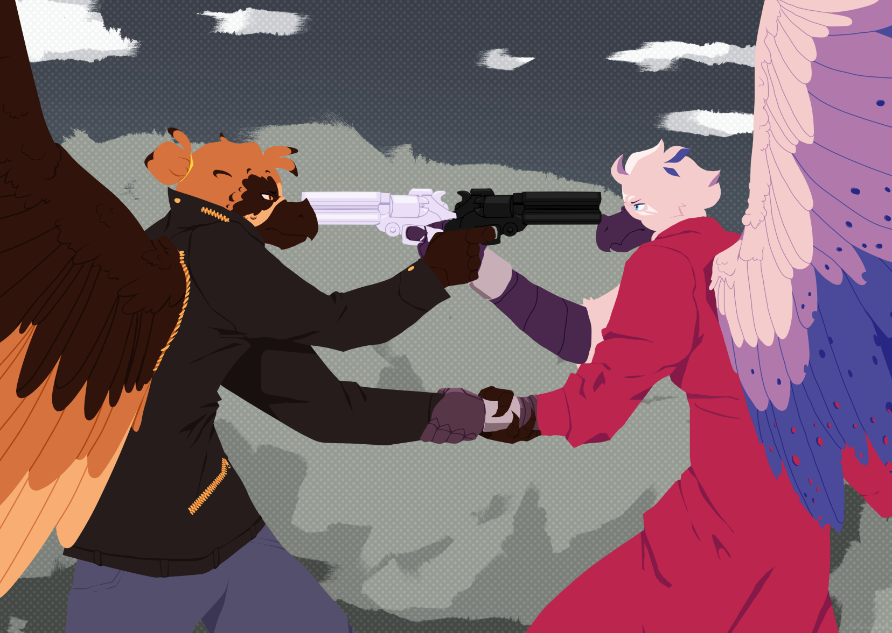

About
This section is a little bit more about my personal interests.
Digital Art
I draw online using MediBang Paint Pro using my mouse on Desktop! Occassionally I can make a couple extra bucks from getting Commissions. Below are a few of, in my opinion, best pieces.
And yes, I can draw humans. This is just some of the work I enjoy the most.


